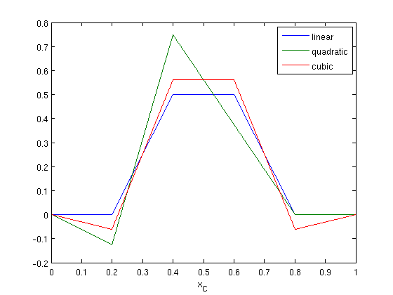

Modeling
Contents
Source representation
We illustrate how we can represent point-sources by adjoint interpolation.
% grid xc = [0:1/5:1]; xs = 0.5; % linear interpolation P1 = zeros(1,6); P1(3) = (xs - xc(4))/(xc(3) - xc(4)); P1(4) = (xs - xc(3))/(xc(4) - xc(3)); % quadratic interpolation P2 = zeros(1,6); P2(2) = (xs - xc(3))/(xc(2) - xc(3))*(xs - xc(4))/(xc(2) - xc(4)); P2(3) = (xs - xc(2))/(xc(3) - xc(2))*(xs - xc(4))/(xc(3) - xc(4)); P2(4) = (xs - xc(2))/(xc(4) - xc(2))*(xs - xc(3))/(xc(4) - xc(3)); % cubic interpolation P3 = zeros(1,6); P3(2) = (xs - xc(3))/(xc(2) - xc(3))*(xs - xc(4))/(xc(2) - xc(4))*(xs - xc(5))/(xc(2) - xc(5)); P3(3) = (xs - xc(2))/(xc(3) - xc(2))*(xs - xc(4))/(xc(3) - xc(4))*(xs - xc(5))/(xc(3) - xc(5)); P3(4) = (xs - xc(2))/(xc(4) - xc(2))*(xs - xc(3))/(xc(4) - xc(3))*(xs - xc(5))/(xc(4) - xc(5)); P3(5) = (xs - xc(2))/(xc(5) - xc(2))*(xs - xc(3))/(xc(5) - xc(3))*(xs - xc(4))/(xc(5) - xc(4));
The resulting discretized delta functions are shown below.
% plot figure; plot(xc,P1'*1,xc,P2'*1,xc,P3'*1);legend('linear','quadratic','cubic'); xlabel('x_C');
The order up to which the discretized delta function behaves like a true delta function is determined by the order of the interpolation. A table with the error is shown below.
% error for l = [0:1:5] error1(l+1) = abs((xc.^l)*(P1'*1) - xs^l); error2(l+1) = abs((xc.^l)*(P2'*1) - xs^l); error3(l+1) = abs((xc.^l)*(P3'*1) - xs^l); end fprintf(1,'l, linear , quad. , cubic\n'); fprintf(1,'%d, %1.2e, %1.2e, %1.2e\n',[[0:5];error1;error2;error3 ]);
l, linear , quad. , cubic 0, 0.00e+00, 0.00e+00, 0.00e+00 1, 0.00e+00, 5.55e-17, 5.55e-17 2, 1.00e-02, 0.00e+00, 0.00e+00 3, 1.50e-02, 3.00e-03, 0.00e+00 4, 1.51e-02, 5.10e-03, 9.00e-04 5, 1.27e-02, 5.55e-03, 2.25e-03